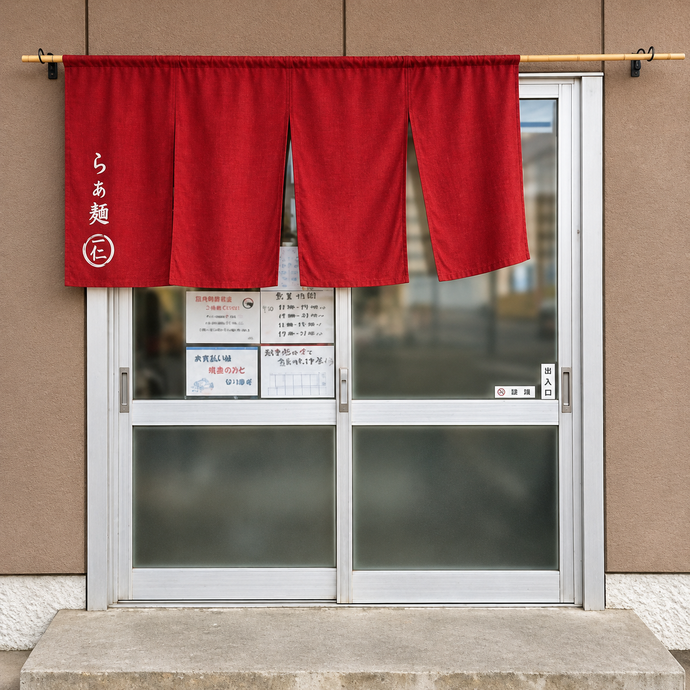

SHIGA · GOKASHO
滋賀・五個荘 らぁ麺 いちと
丁寧な仕事を、まっすぐ一杯に。
RAMEN ICHITO
また食べたくなる、
心に残る一杯を。
滋賀県東近江市五個荘にある、らぁ麺 いちと。
素材と向き合い、一杯一杯丁寧にお作りしています。
お近くにお越しの際は、ぜひお立ち寄りください。

INFORMATION
本日の一杯を、
五個荘で。

営業時間の変更や臨時休業については、 公式Instagramでもお知らせしています。昼営業
11:00～15:00（L.O.14:45）
夜営業
18:00～21:00（L.O.20:45）
定休日
水曜夜・木曜日
YOUR VOICE
ごちそうさまの、そのあとに。
今日の一杯は、いかがでしたか？
味のこと、お店で過ごしたひとときのこと。
ご来店の感想を、Googleの口コミでお聞かせください。
皆さまの率直なお声を、これからの一杯につなげていきます。
何を書こうか迷ったら
Googleマップを開く
「食べたメニュー」や「印象に残ったこと」など、
ご自身の言葉で、お気軽に。
お店の「クチコミ」→「クチコミを書く」から投稿できます。
投稿にはGoogleアカウントへのログインが必要です。
お寄せいただく一つひとつの声に、感謝を込めて。